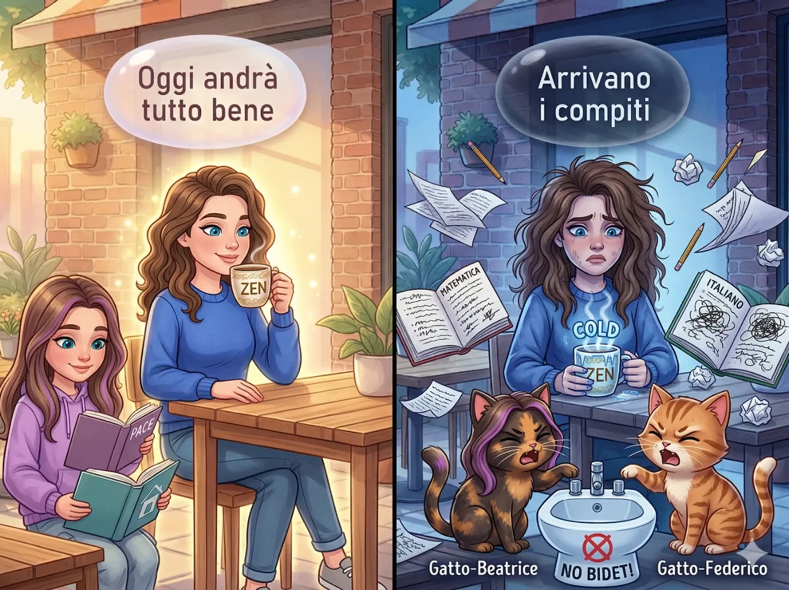
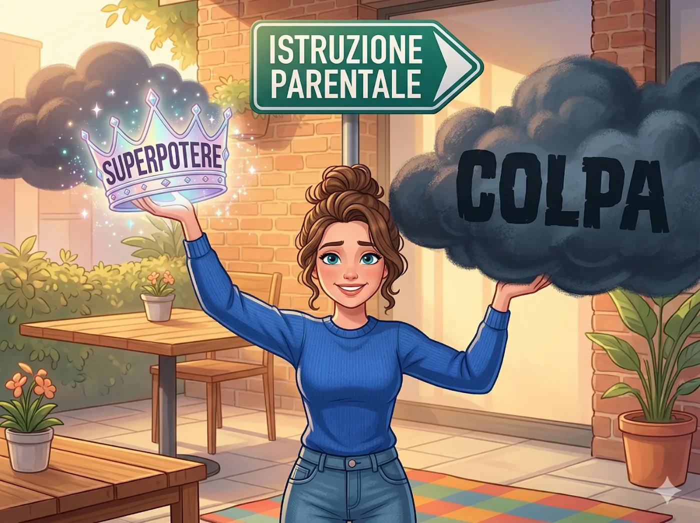
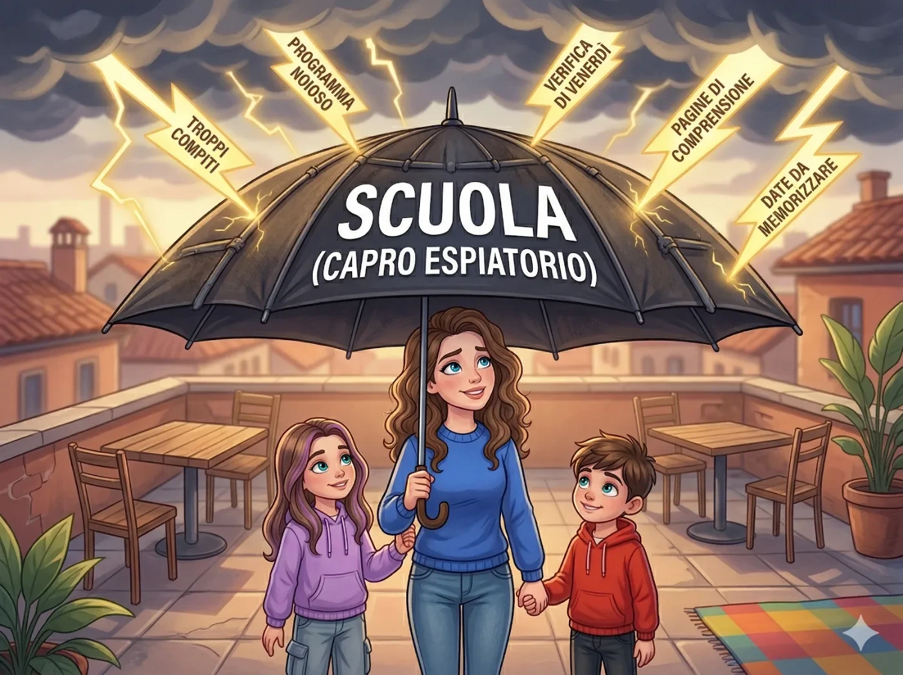
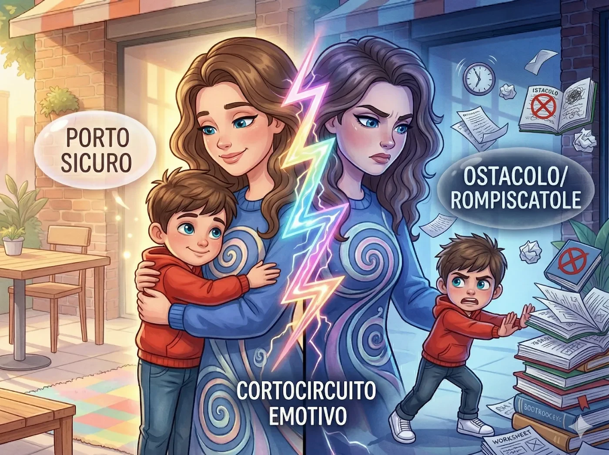
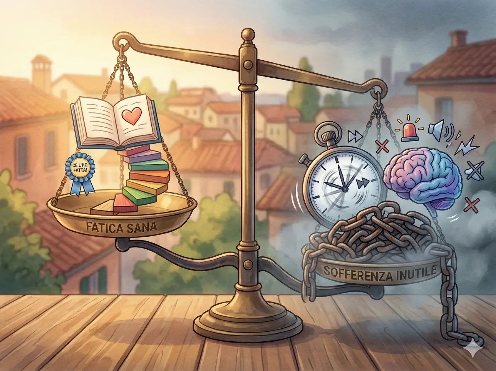
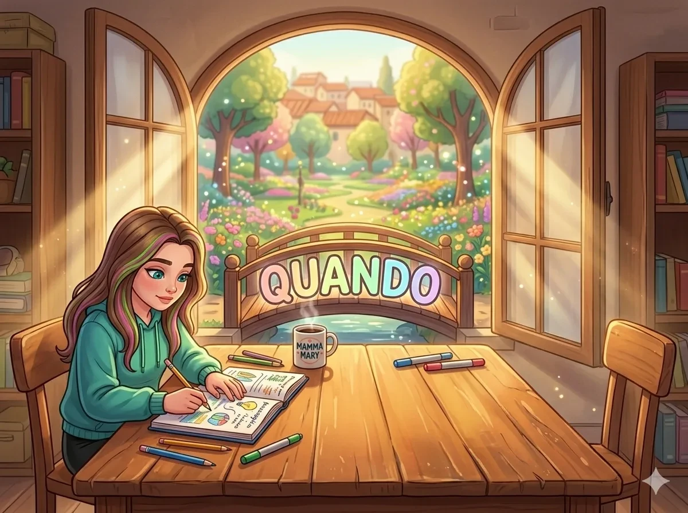
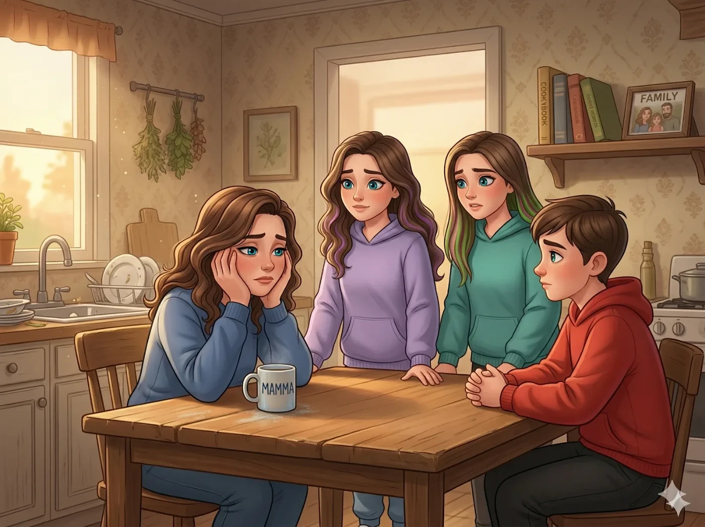
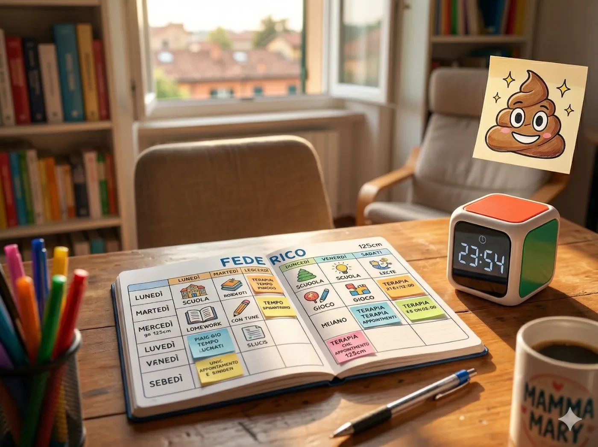
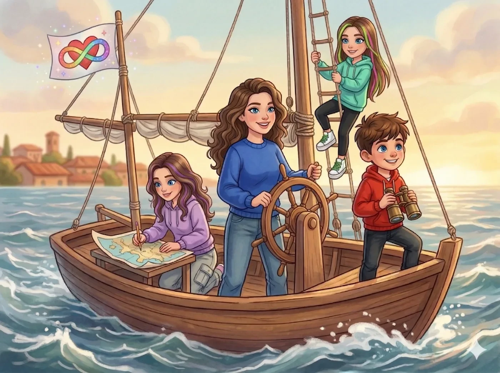
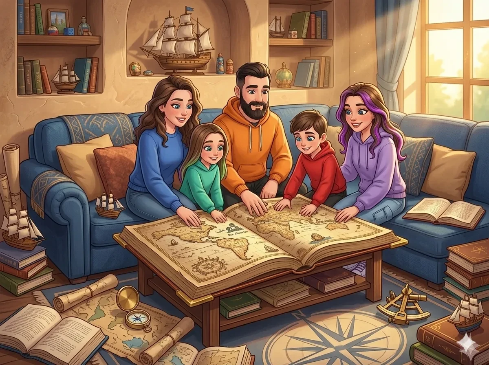

Ci sono mattine in cui mi siedo al tavolo della cucina con il mio caffè ancora caldo, guardo i miei figli e penso: "Oggi andrà bene. Oggi saremo tutti e quattro sereni, produttivi, in armonia con il cosmo."
Poi arriva il momento dei compiti.
E il cosmo può anche aspettare.

Parliamoci chiaramente: chiedere a un bambino o a un adolescente di fare fatica oggi è come chiedere a un gatto di farsi il bidet. Non succede. Non senza resistenza, senza drammi, senza quella faccia da martire che solo i nostri figli sanno fare con una perfezione degna di un Oscar. Viviamo immersi nel mondo della gratificazione istantanea, dove tutto è a portata di click e il piacere deve arrivare adesso, non dopo, non "quando avrai finito". Adesso.
Eppure, la fatica è un muscolo. E come tutti i muscoli, se non lo alleni, si atrofizza. Se i nostri ragazzi crescono senza mai incontrare la sana resistenza dello sforzo, quando la vita — quella vera, quella che non ha pulsante "salta" — presenterà il conto, si troveranno disarmati. Non perché siano cattivi o pigri, ma perché nessuno gli ha insegnato che la fatica può essere attraversata, e che dall'altra parte c'è qualcosa di meraviglioso che si chiama soddisfazione.
Ma c'è un meccanismo sottile, quasi invisibile, che noi genitori usiamo spesso — e io l'ho fatto per anni come educatrice, prima di accorgermene — che si chiama delega della fatica.

La scuola come capro espiatorio
Quando i figli vanno a scuola, la fatica ha sempre un colpevole esterno, pronto all'uso, comodo come un paracadute. È colpa della maestra che ha dato troppi compiti. È colpa del programma ministeriale, noioso e anacronistico. È colpa della verifica di matematica messa di venerdì, che proprio non si fa. È colpa del compagno che distrae, del banco scomodo, della luce al neon che dà fastidio agli occhi.
E noi genitori, nel frattempo? Restiamo lì, nella nostra comoda posizione di base sicura. Quelli che consolano. Quelli che dicono: "Eh amore, hai ragione, questa scuola è proprio pesante, non capisce i bambini, non valorizza le tue qualità." Facile, no? Salviamo la relazione scaricando la responsabilità su un'istituzione che non si difende, non risponde, non ci guarda negli occhi la sera a cena.
La scuola è il parafulmini perfetto. E noi la usiamo, consciamente o no, per restare gli eroi della storia.

Ma cosa succede quando la scuola… sei tu?
Ecco il punto di svolta. Il momento in cui tutto cambia.
In istruzione parentale — che sia homeschooling dichiarato, unschooling, o semplicemente un percorso ibrido costruito con cura — il cuscinetto sparisce. Non c'è più la maestra da incolpare. Non c'è il sistema da criticare davanti alla minestra. Se Beatrice deve affrontare un concetto di grammatica che non le piace, se Federico deve impegnarsi in un'attività che richiede uno sforzo cognitivo sostenuto, la resistenza non ha un ufficio reclami esterno.
Ha solo me.
"È colpa tua che mi fai studiare." "È colpa tua che non mi lasci giocare." "Perché gli altri bambini non devono farlo e io sì?"
In quel momento il cortocircuito è totale, fisico, emotivo. Sono la mamma che ti ama incondizionatamente e, nello stesso respiro, la "rompiscatole" che ti chiede di sudare, di concentrarti, di non mollare. Sono il rifugio e l'ostacolo. Il porto sicuro e la tempesta.
È un peso enorme. C'è chi lo chiama "fusione di ruoli" e chi lo chiama semplicemente "un incubo del mercoledì mattina". In entrambi i casi, a volte viene voglia di mollare tutto — il programma, l'attività, la lezione — pur di non incrinare quel filo prezioso che ci lega a loro.
Ma mollare non è la risposta. E la colpa, come vedremo, può diventare una risorsa straordinaria.

Prima di andare avanti, però, dobbiamo essere onesti con noi stesse. Non tutta la fatica è uguale. Non tutta la fatica è giusta. E confondere le due cose è uno degli errori più comuni — e più costosi — che possiamo fare come genitori-educatori.
La fatica sana è quella che rispetta le tappe evolutive del bambino. È calibrata, è progressiva, è umana. È il "ce l'ho fatta!" dopo uno sforzo reale ma accessibile — quello che nel mio metodo chiamo "a spirale": micro-step costruiti su misura, dove ogni piccolo successo diventa il trampolino per il passo successivo. Non si chiede a un bambino di sei anni di saltare da fermo due metri di altezza. Gli si insegna a saltare una piccola corda, poi una più alta, poi un ostacolo. Il progresso è reale, è visibile, è suo.
La sofferenza inutile è tutta un'altra storia. È quella che io chiamo — con un termine forte, che uso consapevolmente — "violenza motoria" o cognitiva. Chiedere a un bambino con ADHD di stare fermo e in silenzio per tre ore consecutive non è educarlo alla fatica. È ignorare il suo sistema nervoso. Chiedere a un bambino autistico di sopportare un sovraccarico sensoriale senza protocolli di supporto non è allenare la resilienza. È tortura.
La sfida per noi, ogni giorno, è questa domanda: sto chiedendo crescita, o sto imponendo un modello che non gli appartiene?
Non è una domanda facile. Non ha una risposta universale. Ma il fatto che ce la poniamo — che ci interroghiamo, che osserviamo i nostri figli davvero — già ci mette dalla parte giusta.

Tre strumenti per non farsi "mangiare" dalla colpa
Negli anni ho capito che per sopravvivere al ruolo di "esattori della fatica" — perché di questo si tratta, inutile abbellirlo — servono strategie concrete. Non pillole magiche. Non guru. Strumenti reali, testati su bambini reali, nelle mattine reali in cui tutto va storto.
Li chiamo mediatori muti: strumenti che si mettono tra noi e loro, così non siamo più noi contro di loro, ma noi e loro contro il compito.
1. Sostituire il "Se" con il "Quando"
Sembra una sfumatura linguistica. Non lo è.
"Se studi, poi puoi giocare" suona come un ricatto. Il messaggio implicito è: potresti non farcela, e allora non meriti il gioco. Mette il bambino in una posizione difensiva, ansiosa.
"Quando avrai finito i compiti, andiamo al parco" apre invece una possibilità temporale. Il messaggio è: il parco è già nel programma, è una certezza, dobbiamo solo attraversare questo passaggio prima. Sposta l'attenzione dal rischio di fallire al processo da percorrere. È sottile, ma nel tempo cambia la qualità del clima emotivo in casa. Provatelo per una settimana e poi ditemi.

Una delle cose più potenti che ho imparato — e che ho faticato tantissimo ad applicare, perché da educatrice mi era stato insegnato il contrario — è che mostrare le mie emozioni ai miei figli non mi rende debole. Mi rende umana. E l'umanità è il miglior insegnamento che posso dargli.
Se sono stanca, lo dico: "Ragazzi, oggi la mamma ha meno energie del solito. Non è colpa vostra, ma ho bisogno di collaborazione." Se sono frustrata, lo nomino: "Sto sentendo un po' di frustrazione adesso. Aspetto un momento prima di rispondere." Questo non significa scaricare su di loro il peso delle mie emozioni. Significa modellargli un comportamento — quello di riconoscere, nominare e gestire ciò che si prova — che è una delle competenze più importanti della vita adulta.
I bambini che crescono vedendo gli adulti fare pace con le proprie emozioni, piuttosto che negarle o esploderle, diventano adulti emotivamente intelligenti. E io voglio questo per loro più di qualsiasi programma curricolare.

Lo so, il titolo è irresistibile. Ve lo spiego.
In casa nostra — e in molte famiglie con cui lavoro — l'ironia è un salvavita. Un post-it con un disegnino buffo sul frigorifero che ricorda le attività della giornata vale più di dieci raccomandazioni verbali. Un timer a forma di pomodoro sul tavolo che entrambi abbiamo impostato insieme non è un ordine della mamma: è un patto. Un'agenda visiva con le icone scelte dal bambino stesso non è una prigione: è un accordo.
Il mediatore muto funziona perché sposta la "colpa" da me alla cosa. Non sono io che ti chiedo di fermarti: è il timer. Non sono io che dico che adesso si studia: è il cartellino sul muro che abbiamo fatto insieme martedì pomeriggio con i pennarelli colorati. La regola smette di essere arbitraria perché è visibile, condivisa, concordata.
E sì, a volte la "cacca che ride" — un personaggio buffo che annuncia la fine del tempo libero — fa ridere tutti e due, e il momento di tensione si scioglie prima ancora di formarsi. Non è manipolazione. È connessione.

Il vantaggio segreto: mettere la relazione al centro
Prenderci tutta questa "colpa" addosso è faticoso, è vero. È pesante. Ci sono sere in cui mi chiedo se sto sbagliando tutto, se sarebbe più semplice mandarli a scuola come tutti, se questa strada che ho scelto vale davvero lo stress che comporta.
E poi mi ricordo perché l'ho scelta.
Perché non mi interessa il voto — il prodotto finale, pulito e misurabile. Mi interessa il cammino — il processo, caotico e vivo. Mi interessa essere lì quando Federico capisce finalmente quel concetto che stava bloccando. Mi interessa la faccia di Beatrice quando riesce in qualcosa che aveva dichiarato impossibile. Mi interessa che sappiano che si può sbagliare, ricominciare, chiedere scusa, correggere il tiro — e che farlo non è una vergogna, è intelligenza.
Siamo capitani di una nave che affronta tempeste emotive insieme all'equipaggio, senza nasconderci dietro a un banco, senza delegare la navigazione difficile a qualcun altro. È faticoso, sì. È anche il lavoro più bello che abbia mai fatto.

E voi? Come gestite il momento in cui dovete chiedere ai vostri figli di "sudare"? Avete trovato i vostri mediatori muti? Siete pronti a diventare il loro capro espiatorio preferito — sapendo che quel ruolo, portato con consapevolezza, è il più prezioso che esista?
Scrivetemi nei commenti. Vi leggo tutti, sempre, anche nelle mattine in cui il caffè è già freddo.
Con tutto il caos e tutto l'amore, Mary